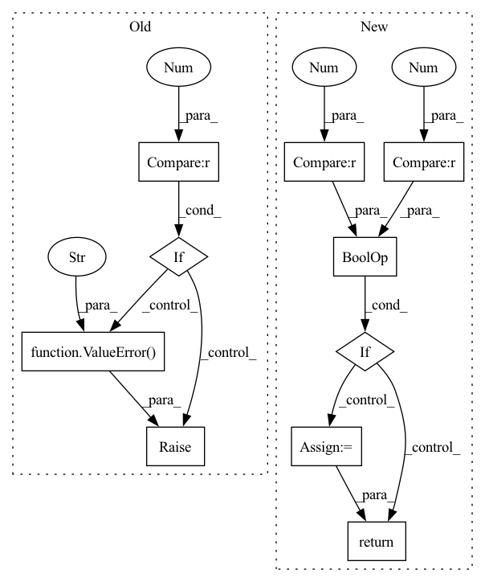

Pattern ID :15389

Before Change
Returns:
:obj:`AssignResult`: The assign result.
if points.shape[0] == 0 or gt_bboxes.shape[0] == 0:
raise ValueError("No gt or bboxes")
points_xy = points[:, :2]
points_stride = points[:, 2]
points_lvl = torch.log2(
points_stride).int() // [3...,4...,5...,6...,7...]
After Change
num_points = points.shape[0]
num_gts = gt_bboxes.shape[0]
if num_gts == 0 or num_points == 0:
// If no truth assign everything to the background
assigned_gt_inds = points.new_full((num_points, ),
0,
dtype=torch.long)
if gt_labels is None:
assigned_labels = None
else:
assigned_labels = points.new_zeros((num_points, ),
dtype=torch.long)
return AssignResult(
num_gts, assigned_gt_inds, None, labels=assigned_labels)
points_xy = points[:, :2]
In pattern: SUPERPATTERN
Frequency: 3
Non-data size: 10
Instances
Fragment ID: 52147738
Project Name: wxinlong/solo
Commit Name: b69667001f250a54a37129a000a8d5160e047239
Time: 2019-12-24
Author: erotemic@gmail.com
File Name: mmdet/core/bbox/assigners/point_assigner.py
M Class Name: PointAssigner
N Class Name: PointAssigner
M Method Name: assign(5)
N Method Name: assign(5)
M Parent Class: BaseAssigner
N Parent Class: BaseAssigner
M File Name: mmdet/core/bbox/assigners/point_assigner.py
N File Name: mmdet/core/bbox/assigners/point_assigner.py
M Start Line: 48
M End Line: 55
N Start Line: 49
N End Line: 65
'>
Before Change
:obj:`AssignResult`: The assign result.
if squares.shape[0] == 0 or gt_bboxes.shape[0] == 0:
raise ValueError("No gt or approxs")
num_squares = squares.size(0)
num_gts = gt_bboxes.size(0)
// re-organize anchors by approxs_per_octave x num_squares
approxs = torch.transpose(
After Change
num_squares = squares.size(0)
num_gts = gt_bboxes.size(0)
if num_squares == 0 or num_gts == 0:
// No predictions and/or truth, return empty assignment
overlaps = approxs.new(num_gts, num_squares)
assign_result = self.assign_wrt_overlaps(overlaps, gt_labels)
return assign_result
// re-organize anchors by approxs_per_octave x num_squares
approxs = torch.transpose(
'>
Fragment ID: 52147729
Project Name: wxinlong/solo
Commit Name: b69667001f250a54a37129a000a8d5160e047239
Time: 2019-12-24
Author: erotemic@gmail.com
File Name: mmdet/core/bbox/assigners/approx_max_iou_assigner.py
M Class Name: ApproxMaxIoUAssigner
N Class Name: ApproxMaxIoUAssigner
M Method Name: assign(7)
N Method Name: assign(7)
M Parent Class: MaxIoUAssigner
N Parent Class: MaxIoUAssigner
M File Name: mmdet/core/bbox/assigners/approx_max_iou_assigner.py
N File Name: mmdet/core/bbox/assigners/approx_max_iou_assigner.py
M Start Line: 90
M End Line: 92
N Start Line: 89
N End Line: 99
'>
Before Change
Returns:
:obj:`AssignResult`: The assign result.
if overlaps.numel() == 0:
raise ValueError("No gt or proposals")
num_gts, num_bboxes = overlaps.size(0), overlaps.size(1)
// 1. assign -1 by default
After Change
-1,
dtype=torch.long)
if num_gts == 0 or num_bboxes == 0:
// No ground truth or boxes, return empty assignment
max_overlaps = overlaps.new_zeros((num_bboxes, ))
if num_gts == 0:
// No truth, assign everything to background
assigned_gt_inds[:] = 0
if gt_labels is None:
assigned_labels = None
else:
assigned_labels = overlaps.new_zeros((num_bboxes, ),
dtype=torch.long)
return AssignResult(
num_gts,
assigned_gt_inds,
max_overlaps,
'>
Fragment ID: 52147719
Project Name: wxinlong/solo
Commit Name: b69667001f250a54a37129a000a8d5160e047239
Time: 2019-12-24
Author: erotemic@gmail.com
File Name: mmdet/core/bbox/assigners/max_iou_assigner.py
M Class Name: MaxIoUAssigner
N Class Name: MaxIoUAssigner
M Method Name: assign_wrt_overlaps(3)
N Method Name: assign_wrt_overlaps(3)
M Parent Class: BaseAssigner
N Parent Class: BaseAssigner
M File Name: mmdet/core/bbox/assigners/max_iou_assigner.py
N File Name: mmdet/core/bbox/assigners/max_iou_assigner.py
M Start Line: 125
M End Line: 128
N Start Line: 135
N End Line: 158